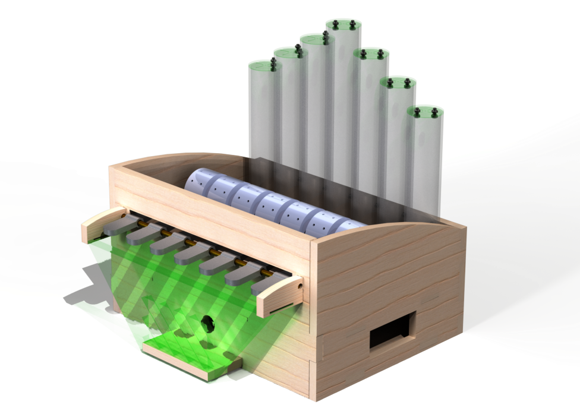
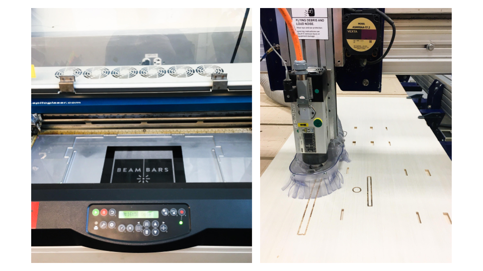
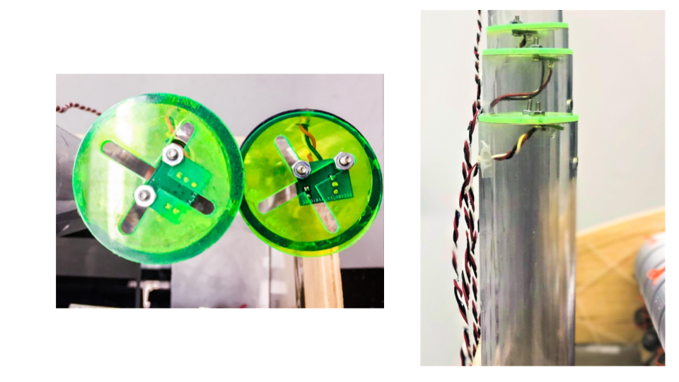
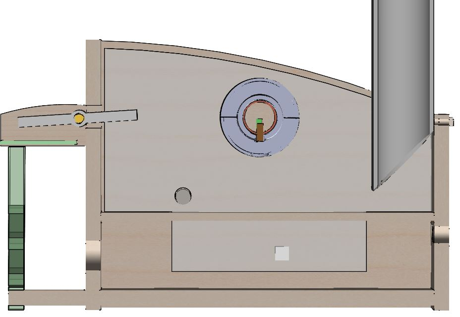
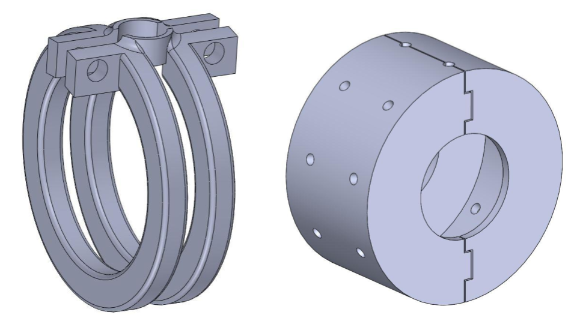
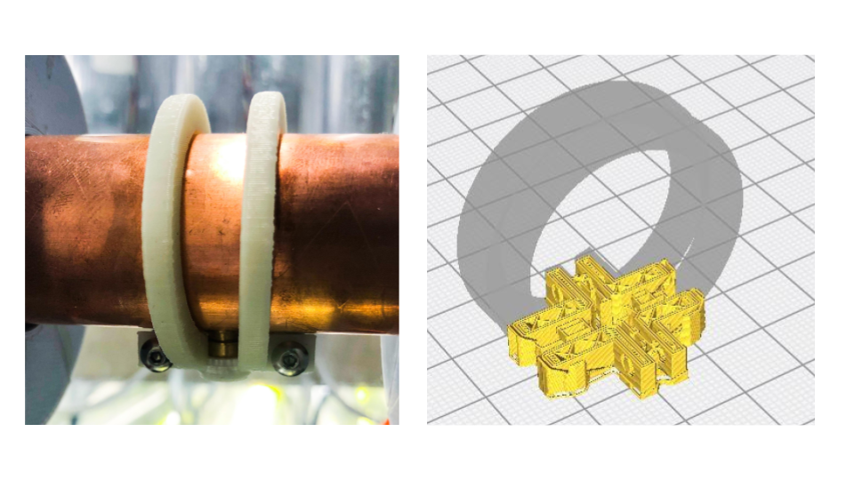

The system starts at the user input at the keys in the front of the box. These are 3D printed with silver filament and rest on a brass rod. The back half of the key lever is attached to a pulley system that is connected to a rotating cylinder that sits on a copper pipe in the center of the box. This copper pipe holds the lasers and allows the rotating cylinders to move about the lasers. When the key is pressed, it rotates the cylinder to a position so that the laser shines through the hole in the cylinder. The laser is pointed down to a 45 degree mirror and is then redirected to another mirror at the back of the box, which is also at a 45 degree angle. The second mirror then redirects the laser up to the top of the clear tubing where the photodiode is mounted.
When the user lets go of the key, there is a counterweight that causes the cylinder to block the laser in rest, and the key returns to its resting plane.
There are false sides and a false bottom in the enclosure design in order to hide the electrical components. The false sides allow the wires for the lasers to reach the false bottom and the false bottom covers the circuits.
The enclosure was cut using the Shopbot, the pipes were cut with the horizontal bandsaw, the acrylic (including the acrylic mirror) was laser cut, and the silver looking components were 3D printed.
The false bottom was made up of clear acrylic, it was spray painted on one side with black and metallic spray paint and rastered and laser cut on the other side


The clear plastic pipes were used to emulate an organ, while the front was designed to emulate a keyboard.
The photodiode PCB mounts were mounted on the top of the clear pipes, attached to laser cut acrylic with slots to allow the adjustability of the placement of the diode.
We used M3 screws and nuts to fasten the PCB to the acrylic, as there were two holes in the PCB to do this.

The idea behind using a user driven system in order to “turn on” the lights was driven by the idea of sustainability but while also still emulating an “inverted” music box. We wanted each note to be controlled by a cylinder looking object, like the cylinder in a music box, with a hole, instead of an extrusion, for the laser to shine through. Originally, we were planning to control each of these cylinders with individual servos, but realized that would be wasting a lot of servos for a simple movement so we decided to use user driven movement
A copper pipe was chosen for the axis of rotation because it was hollow (so we can mount lasers onto it and have the wires go through the center of the tube) and it looked cleaner than PVC, plus had a large diameter to fit all of the wires.
The pulley system is made up of orange sewing thread for the rope, a steel pipe for the pulley itself.


The holes in the copper pipe to mount the lasers have a slightly larger diameter than the lasers’ for adjustability before securing
The mounts slide on and are screw adjustable to tighten around both the laser and the copper pipe
The cylinders that rotate around the lasers are cut in half, with tabs on one end, so they can snap around the lasers, after the lasers are mounted (see cross section picture on the right).

